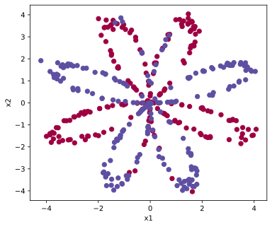
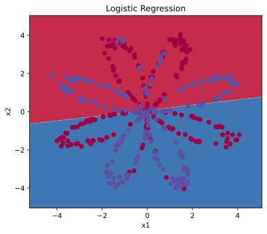
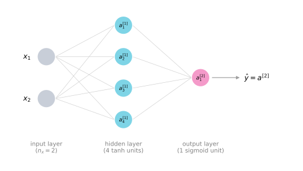
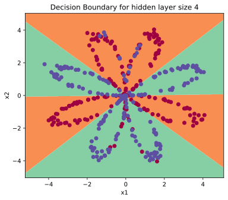

import numpy as np
import copy
import matplotlib.pyplot as plt
import sklearn
import sklearn.datasets
import sklearn.linear_model
np.random.seed(1)Lab: Planar Data Classification with One Hidden Layer
deep-learning
neural-networks
backpropagation
numpy
lab
Build your first neural network in NumPy: a one hidden layer tanh network that learns the flower dataset logistic regression cannot fit.
Time to build your first real neural network, which will have one hidden layer. This is the programming assignment that closes out the shallow network material, and you will notice a big difference between this model and the one you implemented in the logistic regression lab. Everything you need has been built up over the last two pages, the forward pass and the tanh activation and the six backpropagation equations and random initialization.
By the end of this assignment, you will be able to
- implement a 2-class classification neural network with a single hidden layer,
- use units with a non-linear activation function, such as tanh,
- compute the cross entropy loss,
- implement forward and backward propagation.
Packages
First, import all the packages needed during this assignment.
- numpy is the fundamental package for scientific computing with Python.
- sklearn provides simple and efficient tools for data mining and data analysis. Here it supplies the off-the-shelf logistic regression classifier used as a baseline.
- matplotlib is a library for plotting graphs in Python.
copyis from the standard library; itsdeepcopyprotects the caller’s arrays from being modified in place during the parameter update.
The course provides a helper file, planar_utils.py, with the two utility functions this assignment needs and the dataset generator, and a test file, testCases_v2.py, with the seeded inputs used to check each exercise. Both are reproduced inline throughout this page.
NoteLab Files Download
Everything this lab needs, ready to download. There is no dataset file; the flower dataset is generated by code.
- planar_utils.py (3 KB), the dataset generator,
sigmoid, and the decision boundary plotter - testCases_v2.py (4 KB), the seeded exercise test cases
- public_tests.py (15 KB) and test_utils.py (7 KB), the graded exercise checks from the current course release
Two helper functions travel with this assignment. The first is sigmoid, exactly as implemented in the NumPy basics lab.
def sigmoid(x):
"""Compute the sigmoid of x (scalar or numpy array)."""
s = 1 / (1 + np.exp(-x))
return sThe second is plot_decision_boundary. It takes a trained model and paints the plane with the model’s predictions. It builds a fine grid of points covering the data with np.meshgrid, asks the model to predict a label for every grid point, and draws the result with contourf, so each colored region shows where the model would predict each class. The training points are scattered on top.
def plot_decision_boundary(model, X, y):
# Set min and max values and give it some padding
x_min, x_max = X[0, :].min() - 1, X[0, :].max() + 1
y_min, y_max = X[1, :].min() - 1, X[1, :].max() + 1
h = 0.01
# Generate a grid of points with distance h between them
xx, yy = np.meshgrid(np.arange(x_min, x_max, h), np.arange(y_min, y_max, h))
# Predict the function value for the whole grid
Z = model(np.c_[xx.ravel(), yy.ravel()])
Z = Z.reshape(xx.shape)
# Plot the contour and training examples
plt.contourf(xx, yy, Z, cmap=plt.cm.Spectral)
plt.ylabel('x2')
plt.xlabel('x1')
plt.scatter(X[0, :], X[1, :], c=y.ravel(), cmap=plt.cm.Spectral)Load the Dataset
The data for this lab is generated by code rather than downloaded. The generator places \(m = 400\) points on the plane, half labeled red (\(y = 0\)) and half labeled blue (\(y = 1\)), arranged along petal-shaped curves with a little noise. Each point is described by its two coordinates, so there are two input features, and the arrays follow the course convention of stacking examples in columns.
def load_planar_dataset():
np.random.seed(1)
m = 400 # number of examples
N = int(m / 2) # number of points per class
D = 2 # dimensionality
X = np.zeros((m, D)) # data matrix where each row is a single example
Y = np.zeros((m, 1), dtype='uint8') # labels vector (0 for red, 1 for blue)
a = 4 # maximum ray of the flower
for j in range(2):
ix = range(N * j, N * (j + 1))
t = np.linspace(j * 3.12, (j + 1) * 3.12, N) + np.random.randn(N) * 0.2 # theta
r = a * np.sin(4 * t) + np.random.randn(N) * 0.2 # radius
X[ix] = np.c_[r * np.sin(t), r * np.cos(t)]
Y[ix] = j
X = X.T
Y = Y.T
return X, Y
X, Y = load_planar_dataset()Visualize the dataset with matplotlib. The data looks like a “flower” with some red (label \(y = 0\)) and some blue (label \(y = 1\)) points. Your goal is to build a model to fit this data, in other words a classifier that defines regions of the plane as either red or blue.
plt.figure(figsize=(6, 5))
plt.scatter(X[0, :], X[1, :], c=Y.ravel(), s=40, cmap=plt.cm.Spectral)
plt.xlabel('x1')
plt.ylabel('x2')
plt.show()
You have
- a numpy array (matrix)
Xthat contains your features(x1, x2), - a numpy array (vector)
Ythat contains your labels (red: 0, blue: 1).
First, get a better sense of what the data is like. How many training examples are there, and what are the shapes of X and Y?
shape_X = X.shape
shape_Y = Y.shape
m = X.shape[1] # training set size
print('The shape of X is: ' + str(shape_X))
print('The shape of Y is: ' + str(shape_Y))
print('I have m = %d training examples!' % (m))The shape of X is: (2, 400)
The shape of Y is: (1, 400)
I have m = 400 training examples!Just as the course notation prescribes, \(X\) is \(n_x \times m\) with one example per column (\(n_x = 2\) here), and \(Y\) is \(1 \times m\).
Simple Logistic Regression
Before building a full neural network, see how logistic regression performs on this problem. sklearn’s built-in LogisticRegressionCV trains a logistic regression classifier in two lines. (sklearn expects examples in rows, hence the transposes.)
# Train the logistic regression classifier
clf = sklearn.linear_model.LogisticRegressionCV()
clf.fit(X.T, Y.T.ravel())LogisticRegressionCV()In a Jupyter environment, please rerun this cell to show the HTML representation or trust the notebook.
On GitHub, the HTML representation is unable to render, please try loading this page with nbviewer.org.
Parameters
Fitted attributes
Now plot the decision boundary of the trained model and print its accuracy.
# Plot the decision boundary for logistic regression
plt.figure(figsize=(6, 5))
plot_decision_boundary(lambda x: clf.predict(x), X, Y)
plt.title("Logistic Regression")
# Print accuracy
LR_predictions = clf.predict(X.T)
accuracy = (np.dot(Y, LR_predictions) + np.dot(1 - Y, 1 - LR_predictions)).item() / Y.size * 100
print('Accuracy of logistic regression: %d ' % accuracy +
'% ' + "(percentage of correctly labeled datapoints)")Accuracy of logistic regression: 47 % (percentage of correctly labeled datapoints)
Interpretation. The dataset is not linearly separable, and logistic regression can only draw a straight line, so it does not perform well. Accuracy is 47%, worse than guessing the majority class. Hopefully a neural network will do better.
Neural Network Model
Logistic regression did not work well on the flower dataset. Next, you train a neural network with a single hidden layer and see how it handles the same problem. Here is the model, four tanh units in the hidden layer feeding one sigmoid output unit.

Mathematically, for one example \(x^{(i)}\),
\[ z^{[1](i)} = W^{[1]} x^{(i)} + b^{[1]} \qquad a^{[1](i)} = \tanh\big(z^{[1](i)}\big) \]
\[ z^{[2](i)} = W^{[2]} a^{[1](i)} + b^{[2]} \qquad \hat{y}^{(i)} = a^{[2](i)} = \sigma\big(z^{[2](i)}\big) \]
\[ y^{(i)}_{\text{prediction}} = \begin{cases} 1 & \text{if } a^{[2](i)} > 0.5 \\ 0 & \text{otherwise} \end{cases} \]
Given the predictions on all the examples, you can also compute the cost \(J\) as
\[ J = -\frac{1}{m} \sum_{i=1}^{m} \Big( y^{(i)} \log\big(a^{[2](i)}\big) + \big(1 - y^{(i)}\big) \log\big(1 - a^{[2](i)}\big) \Big) \]
Reminder. The general methodology to build a neural network is
- define the neural network structure (number of input units, number of hidden units, and so on),
- initialize the model’s parameters,
- loop over forward propagation, the loss, backward propagation to get the gradients, and the parameter update (gradient descent).
In practice you build helper functions for each of these steps, then merge them into one function called nn_model(). Once you have built nn_model() and learned the right parameters, you can make predictions on new data.
Defining the Neural Network Structure
Define three variables. n_x is the size of the input layer, n_h is the size of the hidden layer (hard coded to 4 for now), and n_y is the size of the output layer. The input and output sizes come straight from the shapes of X and Y, so this function works for any dataset following the columns-are-examples convention.
def layer_sizes(X, Y):
"""
Arguments:
X -- input dataset of shape (input size, number of examples)
Y -- labels of shape (output size, number of examples)
Returns:
n_x -- the size of the input layer
n_h -- the size of the hidden layer
n_y -- the size of the output layer
"""
n_x = X.shape[0]
n_h = 4
n_y = Y.shape[0]
return (n_x, n_h, n_y)
(n_x, n_h, n_y) = layer_sizes(X, Y)
print("The size of the input layer is: n_x = " + str(n_x))
print("The size of the hidden layer is: n_h = " + str(n_h))
print("The size of the output layer is: n_y = " + str(n_y))The size of the input layer is: n_x = 2
The size of the hidden layer is: n_h = 4
The size of the output layer is: n_y = 1Initializing the Parameters
Initialize the weight matrices with small random values and the bias vectors with zeros, exactly as the random initialization section explained. If the weights started at zero, every hidden unit would compute the same function forever; random weights break the symmetry, and the 0.01 factor keeps the tanh units away from their flat, saturated regions.
The shapes follow the dimension rules, so \(W^{[1]}\) is \((n_h, n_x)\), \(b^{[1]}\) is \((n_h, 1)\), \(W^{[2]}\) is \((n_y, n_h)\), and \(b^{[2]}\) is \((n_y, 1)\).
def initialize_parameters(n_x, n_h, n_y):
"""
Argument:
n_x -- size of the input layer
n_h -- size of the hidden layer
n_y -- size of the output layer
Returns:
params -- python dictionary containing your parameters:
W1 -- weight matrix of shape (n_h, n_x)
b1 -- bias vector of shape (n_h, 1)
W2 -- weight matrix of shape (n_y, n_h)
b2 -- bias vector of shape (n_y, 1)
"""
W1 = np.random.randn(n_h, n_x) * 0.01
b1 = np.zeros((n_h, 1))
W2 = np.random.randn(n_y, n_h) * 0.01
b2 = np.zeros((n_y, 1))
parameters = {"W1": W1,
"b1": b1,
"W2": W2,
"b2": b2}
return parameters
np.random.seed(2)
parameters = initialize_parameters(n_x, n_h, n_y)
print("W1 = " + str(parameters["W1"]))
print("b1 = " + str(parameters["b1"]))
print("W2 = " + str(parameters["W2"]))
print("b2 = " + str(parameters["b2"]))W1 = [[-0.00416758 -0.00056267]
[-0.02136196 0.01640271]
[-0.01793436 -0.00841747]
[ 0.00502881 -0.01245288]]
b1 = [[0.]
[0.]
[0.]
[0.]]
W2 = [[-0.01057952 -0.00909008 0.00551454 0.02292208]]
b2 = [[0.]]Forward Propagation
Implement the forward pass using the vectorized equations, tanh for the hidden layer and sigmoid for the output,
\[ Z^{[1]} = W^{[1]} X + b^{[1]} \qquad A^{[1]} = \tanh\big(Z^{[1]}\big) \qquad Z^{[2]} = W^{[2]} A^{[1]} + b^{[2]} \qquad \hat{Y} = A^{[2]} = \sigma\big(Z^{[2]}\big) \]
The function retrieves each parameter from the dictionary, computes the four quantities, and stores \(Z^{[1]}, A^{[1]}, Z^{[2]}, A^{[2]}\) in a cache. Backpropagation will need these values, so the cache is handed to the backward function later rather than recomputing them.
def forward_propagation(X, parameters):
"""
Argument:
X -- input data of size (n_x, m)
parameters -- python dictionary containing your parameters (output of initialization function)
Returns:
A2 -- The sigmoid output of the second activation
cache -- a dictionary containing "Z1", "A1", "Z2" and "A2"
"""
# Retrieve each parameter from the dictionary "parameters"
W1 = parameters["W1"]
b1 = parameters["b1"]
W2 = parameters["W2"]
b2 = parameters["b2"]
# Implement forward propagation to calculate A2 (probabilities)
Z1 = np.dot(W1, X) + b1
A1 = np.tanh(Z1)
Z2 = np.dot(W2, A1) + b2
A2 = sigmoid(Z2)
assert(A2.shape == (1, X.shape[1]))
cache = {"Z1": Z1,
"A1": A1,
"Z2": Z2,
"A2": A2}
return A2, cache
A2, cache = forward_propagation(X, parameters)
print("A2 shape: " + str(A2.shape))
print("First five predictions: " + str(A2[0, :5]))A2 shape: (1, 400)
First five predictions: [0.4996522 0.50018609 0.50015804 0.50026729 0.49970121]With the tiny random initial weights, every prediction sits very close to 0.5, the network has not learned anything yet.
Computing the Cost
Now that you have \(A^{[2]}\) (in the Python variable A2), which contains \(a^{[2](i)}\) for every example, compute the cost. One way to implement part of the sum \(-\sum_{i=1}^{m} y^{(i)} \log\big(a^{[2](i)}\big)\) without a for loop is np.multiply(np.log(A2), Y) followed by np.sum, multiplying the two arrays element by element and adding everything up. The same trick handles the \((1 - y)\) term, and dividing by \(m\) gives the average.
The final float(np.squeeze(cost)) makes sure the cost comes out as a plain number rather than a one by one array (it turns [[17]] into 17).
def compute_cost(A2, Y):
"""
Computes the cross-entropy cost
Arguments:
A2 -- The sigmoid output of the second activation, of shape (1, number of examples)
Y -- "true" labels vector of shape (1, number of examples)
Returns:
cost -- cross-entropy cost
"""
m = Y.shape[1] # number of examples
# Compute the cross-entropy cost
logprobs = np.multiply(np.log(A2), Y) + np.multiply(np.log(1 - A2), (1 - Y))
cost = -np.sum(logprobs) / m
cost = float(np.squeeze(cost))
return cost
cost = compute_cost(A2, Y)
print("cost = " + str(cost))cost = 0.6930480201239823A sanity check worth noticing: with all predictions near 0.5, the cost is close to \(-\log(0.5) \approx 0.693\), exactly what the cross entropy of a coin-flip guess should be.
Backward Propagation
Using the cache computed during forward propagation, you can now implement backward propagation. Backpropagation is usually the hardest, most mathematical part of deep learning. The six vectorized equations are exactly the ones derived on the gradient descent page,
\[ dZ^{[2]} = A^{[2]} - Y \qquad dW^{[2]} = \frac{1}{m} dZ^{[2]} A^{[1]T} \qquad db^{[2]} = \frac{1}{m}\, \texttt{np.sum}\big(dZ^{[2]}, \text{axis=1, keepdims=True}\big) \]
\[ dZ^{[1]} = W^{[2]T} dZ^{[2]} * g^{[1]\prime}\big(Z^{[1]}\big) \qquad dW^{[1]} = \frac{1}{m} dZ^{[1]} X^{T} \qquad db^{[1]} = \frac{1}{m}\, \texttt{np.sum}\big(dZ^{[1]}, \text{axis=1, keepdims=True}\big) \]
One tip: to compute \(dZ^{[1]}\) you need \(g^{[1]\prime}(Z^{[1]})\). Since \(g^{[1]}\) is the tanh activation, its derivative is \(1 - a^2\), so you can compute \(g^{[1]\prime}(Z^{[1]})\) as (1 - np.power(A1, 2)) using the cached A1.
def backward_propagation(parameters, cache, X, Y):
"""
Implement the backward propagation using the six equations above.
Arguments:
parameters -- python dictionary containing our parameters
cache -- a dictionary containing "Z1", "A1", "Z2" and "A2"
X -- input data of shape (2, number of examples)
Y -- "true" labels vector of shape (1, number of examples)
Returns:
grads -- python dictionary containing your gradients with respect to different parameters
"""
m = X.shape[1]
# Retrieve W1 and W2 from the dictionary "parameters"
W1 = parameters["W1"]
W2 = parameters["W2"]
# Retrieve A1 and A2 from dictionary "cache"
A1 = cache["A1"]
A2 = cache["A2"]
# Backward propagation: calculate dW1, db1, dW2, db2
dZ2 = A2 - Y
dW2 = (1 / m) * np.dot(dZ2, A1.T)
db2 = (1 / m) * np.sum(dZ2, axis=1, keepdims=True)
dZ1 = np.dot(W2.T, dZ2) * (1 - np.power(A1, 2))
dW1 = (1 / m) * np.dot(dZ1, X.T)
db1 = (1 / m) * np.sum(dZ1, axis=1, keepdims=True)
grads = {"dW1": dW1,
"db1": db1,
"dW2": dW2,
"db2": db2}
return grads
grads = backward_propagation(parameters, cache, X, Y)
print("dW1 shape: " + str(grads["dW1"].shape))
print("db1 shape: " + str(grads["db1"].shape))
print("dW2 shape: " + str(grads["dW2"].shape))
print("db2 shape: " + str(grads["db2"].shape))dW1 shape: (4, 2)
db1 shape: (4, 1)
dW2 shape: (1, 4)
db2 shape: (1, 1)As the dimension-checking rule promises, each dfoo has exactly the same shape as its foo.
Updating the Parameters
Implement the gradient descent update rule. For any parameter \(\theta\),
\[ \theta := \theta - \alpha \frac{\partial J}{\partial \theta} \]
where \(\alpha\) is the learning rate. With a good learning rate the iterates walk steadily downhill to the minimum; with a bad, too-large one they overshoot and can diverge, as illustrated back in the machine learning course’s learning rate discussion.
One Python detail. copy.deepcopy is used when retrieving the weight matrices, so the update builds new arrays instead of silently modifying the dictionaries the caller passed in.
def update_parameters(parameters, grads, learning_rate=1.2):
"""
Updates parameters using the gradient descent update rule given above
Arguments:
parameters -- python dictionary containing your parameters
grads -- python dictionary containing your gradients
Returns:
parameters -- python dictionary containing your updated parameters
"""
# Retrieve a copy of each parameter from the dictionary "parameters"
W1 = copy.deepcopy(parameters["W1"])
b1 = parameters["b1"]
W2 = copy.deepcopy(parameters["W2"])
b2 = parameters["b2"]
# Retrieve each gradient from the dictionary "grads"
dW1 = grads["dW1"]
db1 = grads["db1"]
dW2 = grads["dW2"]
db2 = grads["db2"]
# Update rule for each parameter
W1 = W1 - learning_rate * dW1
b1 = b1 - learning_rate * db1
W2 = W2 - learning_rate * dW2
b2 = b2 - learning_rate * db2
parameters = {"W1": W1,
"b1": b1,
"W2": W2,
"b2": b2}
return parametersIntegration: Build nn_model()
Integrate the previous functions into nn_model(), in the right order. Define the sizes, initialize the parameters, then loop over forward propagation, cost, backward propagation, and the parameter update.
def nn_model(X, Y, n_h, num_iterations=10000, print_cost=False):
"""
Arguments:
X -- dataset of shape (2, number of examples)
Y -- labels of shape (1, number of examples)
n_h -- size of the hidden layer
num_iterations -- Number of iterations in gradient descent loop
print_cost -- if True, print the cost every 1000 iterations
Returns:
parameters -- parameters learned by the model. They can then be used to predict.
"""
np.random.seed(3)
n_x = layer_sizes(X, Y)[0]
n_y = layer_sizes(X, Y)[2]
# Initialize parameters
parameters = initialize_parameters(n_x, n_h, n_y)
# Loop (gradient descent)
for i in range(0, num_iterations):
# Forward propagation. Inputs: "X, parameters". Outputs: "A2, cache".
A2, cache = forward_propagation(X, parameters)
# Cost function. Inputs: "A2, Y". Outputs: "cost".
cost = compute_cost(A2, Y)
# Backpropagation. Inputs: "parameters, cache, X, Y". Outputs: "grads".
grads = backward_propagation(parameters, cache, X, Y)
# Gradient descent parameter update. Inputs: "parameters, grads". Outputs: "parameters".
parameters = update_parameters(parameters, grads, learning_rate=1.2)
# Print the cost every 1000 iterations
if print_cost and i % 1000 == 0:
print("Cost after iteration %i: %f" % (i, cost))
return parametersTest the Model
Predict
Predict with your model by building predict(). It uses forward propagation to compute the probabilities \(A^{[2]}\), then thresholds them at 0.5,
\[ y_{\text{prediction}} = \begin{cases} 1 & \text{if } a^{[2]} > 0.5 \\ 0 & \text{otherwise} \end{cases} \]
In NumPy, comparing a whole array against a threshold does this in one step: (A2 > 0.5) produces an array of True/False values, which behave as 1 and 0.
def predict(parameters, X):
"""
Using the learned parameters, predicts a class for each example in X
Arguments:
parameters -- python dictionary containing your parameters
X -- input data of size (n_x, m)
Returns
predictions -- vector of predictions of our model (red: 0 / blue: 1)
"""
# Compute probabilities using forward propagation, and classify to 0/1 using 0.5 as the threshold
A2, cache = forward_propagation(X, parameters)
predictions = (A2 > 0.5)
return predictionsTest the Model on the Planar Dataset
It is time to run the model and see how it performs on the planar dataset. Train it with a hidden layer of 4 units for 10,000 iterations of gradient descent, then plot the learned decision boundary.
# Build a model with a n_h-dimensional hidden layer
parameters = nn_model(X, Y, n_h=4, num_iterations=10000, print_cost=True)
# Plot the decision boundary
plt.figure(figsize=(6, 5))
plot_decision_boundary(lambda x: predict(parameters, x.T), X, Y)
plt.title("Decision Boundary for hidden layer size " + str(4))
plt.show()Cost after iteration 0: 0.693162
Cost after iteration 1000: 0.258625
Cost after iteration 2000: 0.239334
Cost after iteration 3000: 0.230802
Cost after iteration 4000: 0.225528
Cost after iteration 5000: 0.221845
Cost after iteration 6000: 0.219094
Cost after iteration 7000: 0.220617
Cost after iteration 8000: 0.219412
Cost after iteration 9000: 0.218526
# Print accuracy
predictions = predict(parameters, X)
accuracy = (np.dot(Y, predictions.T) + np.dot(1 - Y, 1 - predictions.T)).item() / Y.size * 100
print('Accuracy: %d' % accuracy + '%')Accuracy: 90%Accuracy is really high compared to logistic regression, 90% against 47%. The model has learned the patterns of the flower’s petals. Unlike logistic regression, neural networks are able to learn even highly non-linear decision boundaries, and that difference is exactly what the tanh hidden layer buys you.
NoteWhat to Remember
- A neural network with one hidden layer is built from the same ingredients as logistic regression, a linear step and an activation per layer, applied twice.
- The workflow is always the same. Define the structure, initialize the parameters randomly, then loop forward propagation, cost, backward propagation, and the gradient descent update.
- The cache saves the forward pass values (\(Z^{[1]}, A^{[1]}, Z^{[2]}, A^{[2]}\)) so backpropagation can reuse them.
- tanh hidden units plus a sigmoid output let the network carve non-linear decision boundaries that a linear model can never draw.
Review Questions
1. Why does logistic regression reach only 47% accuracy on the flower dataset while the one hidden layer network reaches 90%?
TipAnswer
Logistic regression can only draw a linear decision boundary, and the flower’s petals are not linearly separable, so no straight line does well. The hidden layer of tanh units lets the network compose non-linear functions of the inputs, carving a petal-shaped boundary that follows the data.
1. In backward_propagation, why can \(g^{[1]\prime}(Z^{[1]})\) be computed as (1 - np.power(A1, 2))?
TipAnswer
The hidden activation is \(\tanh\), whose derivative is \(1 - \tanh(z)^2\). Since the cached A1 already holds \(\tanh(Z^{[1]})\), the derivative comes almost for free as \(1 - A_1^2\), with no need to recompute the tanh.
1. What is the purpose of the cache returned by forward_propagation?
TipAnswer
It stores \(Z^{[1]}, A^{[1]}, Z^{[2]}, A^{[2]}\) from the forward pass. Backpropagation needs exactly these values (for example \(A^{[1]}\) in \(dW^{[2]}\) and \(dZ^{[1]}\)), so caching them avoids recomputing the forward pass during the backward step.
1. Why are the weights initialized with np.random.randn(...) * 0.01 instead of zeros, and why are zero biases fine?
TipAnswer
Zero weights would make every hidden unit compute the same function, and by symmetry their gradients would stay identical forever, so the network could never use more than one effective hidden unit. Small random weights break the symmetry, and the 0.01 factor keeps the tanh units off their flat, saturated regions. The biases do not cause the symmetry problem, so zeros are fine for them.
1. Why does the cost on the freshly initialized network come out near 0.693?
TipAnswer
With tiny random weights, \(Z^{[2]}\) is close to zero and the sigmoid outputs are all close to 0.5, a coin-flip guess for every example. The cross entropy of predicting 0.5 is \(-\log(0.5) = \log 2 \approx 0.693\), so a starting cost near that value is a sign the implementation is correct.